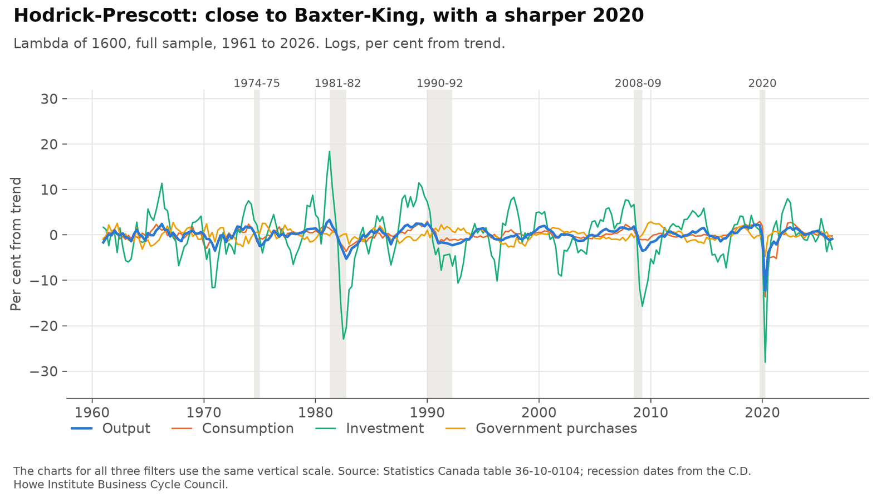
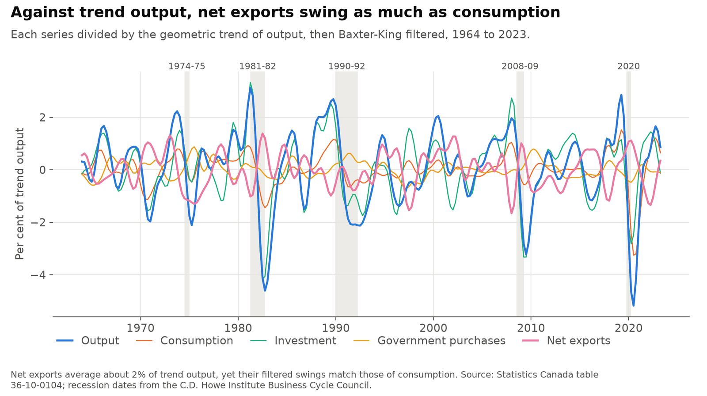
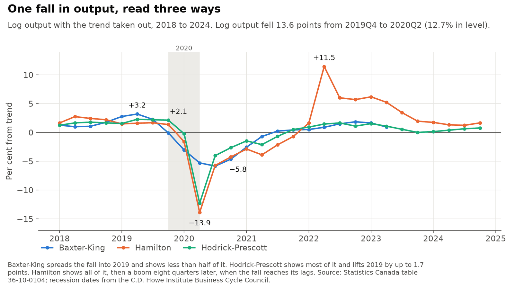

How three filters read Canada's business cycles, and what they make of 2020
Economists often describe a business cycle by taking the trend out of GDP and looking at what remains. How you take the trend out matters. I compare three common ways of doing it on Canadian national accounts: the Baxter-King filter, the Hamilton projection and the Hodrick-Prescott filter. This is a redo of an assignment from a graduate macroeconomics course at Simon Fraser University. Data run from 1961 to 2026Q2, and the results describe Statistics Canada's file dated August 28, 2026.
Personal project: my own analysis of publicly available data. It is not associated with my work for any current or past employer and does not represent their views.
At a glance
| Question | Methods | Answer |
|---|---|---|
| How do the parts of output move? | Three filters on logs | Investment swings 3.4 to 3.7 times as far as output and moves with it. Consumption also moves with output. Government purchases are close to unrelated to it. |
| Are net exports procyclical or countercyclical? | Shares of trend output, Baxter-King, block bootstrap | Weakly countercyclical: a correlation of −0.21 (−0.44 to 0.06), and about zero since 1990. |
| How does each filter treat 2020? | Five dated recessions, pandemic smoothed out as a test | Log output fell 13.6 points. Baxter-King shows −5.8, Hodrick-Prescott −12.3 and Hamilton −13.9. Hamilton then shows +11.5 in 2022Q2, an echo of the fall. |
| Which filter to use? | Dating, leakage, real-time revisions | Hodrick-Prescott for describing past cycles. Hamilton for reading the latest quarter. |
Explore the three filters
Hover or tap for a quarter's readings, in per cent from trend. Recessions are shaded. Baxter-King has no reading for the first and last 12 quarters, and Hamilton none for the first 11.
1. How do the parts of output move?

Investment swings 3.4 to 3.7 times as far as output and moves with it. Consumption also moves with output, and government purchases are close to unrelated to it. Through 2019, consumption is the least volatile series under all three filters. With 2020 included, its swings grow to about the size of output's.
| Standard deviation in per cent, and correlation with output | Baxter-King | Hamilton | Hodrick-Prescott |
|---|---|---|---|
| Output | 1.46, 1.00 | 3.19, 1.00 | 1.56, 1.00 |
| Consumption | 1.37, 0.84 | 3.20, 0.81 | 1.52, 0.82 |
| Investment | 5.43, 0.84 | 10.68, 0.82 | 5.68, 0.81 |
| Government purchases | 1.08, −0.03 | 3.21, 0.16 | 1.21, 0.03 |
2. Are net exports procyclical or countercyclical?

Net exports are sometimes negative, so they have no log. Dividing each series by the trend of output gets around this, and it also shows how much each part contributes. On this measure investment accounts for 71% of the variance in output, and consumption for 36%.
Net exports are weakly countercyclical. The correlation with output is −0.21, with a 95% range of −0.44 to 0.06, and it is about zero since 1990. They rose during the 1981-82, 2008-09 and 2020 recessions and barely moved in the other two.
3. 2020 against earlier recessions

Log output fell 13.6 points from 2019Q4 to 2020Q2, about four times the average of the four earlier recessions. Baxter-King shows −5.8, about twice its usual low, because it removes much of a fall and rebound that fast. Hodrick-Prescott shows −12.3, and its trend bends down to meet the fall, lifting 2019 by up to 1.7 points. Hamilton shows −13.9, then +11.5 in 2022Q2, when the low quarters of 2020 reach its lags. That is its largest reading in the sample. If the pandemic is replaced with a straight line, 10.6 points of it go away.
| Recession | Fall in log output | Baxter-King low | Hamilton low | Hodrick-Prescott low |
|---|---|---|---|---|
| 1974-75 | 1.1 | −2.0 | −3.4 | −2.5 |
| 1981-82 | 5.5 | −4.4 | −9.3 | −5.3 |
| 1990-92 | 2.5 | −2.1 | −8.5 | −2.3 |
| 2008-09 | 4.5 | −3.2 | −6.6 | −3.5 |
| 2020 | 13.6 | −5.8 | −13.9 | −12.3 |
Log points, or per cent from trend. The low is taken within four quarters of the recession.
4. Which filter to use
For describing past cycles, I would use Hodrick-Prescott. Its low falls in the dated trough quarter in all five recessions, output is above trend at all five peaks, and 2020 moves other quarters less than it does under the other filters. For reading the latest quarter I would use Hamilton. Hodrick-Prescott's first reading has the wrong sign 37% of the time once later data arrive, against 12% for Hamilton, and Baxter-King has no reading for the last 12 quarters.
| Test | Baxter-King | Hamilton | Hodrick-Prescott |
|---|---|---|---|
| Low falls in the dated trough quarter, of 5 recessions | 1 | 4 | 5 |
| Output above trend at the dated peak, of 5 recessions | 4 | 2 | 5 |
| Largest leakage from 2020 outside the pandemic | 2.6 | 10.6 | 1.7 |
| First reading has the wrong sign | no reading | 12% | 37% |
| Latest quarter available | 2023Q2 | 2026Q2 | 2026Q2 |
These tests lean toward filters that follow output closely, and the recession dates rest partly on GDP. They also don't test Hamilton's objection that Hodrick-Prescott can create cycles where there are none.
Data
Statistics Canada table 36-10-0104, quarterly, in chained 2017 dollars, seasonally adjusted at annual rates. Recession dates from the C.D. Howe Institute Business Cycle Council.
Adapted from Statistics Canada; this does not constitute an endorsement by Statistics Canada of this product.